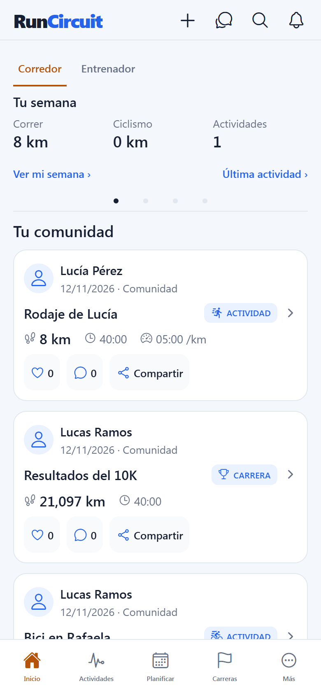
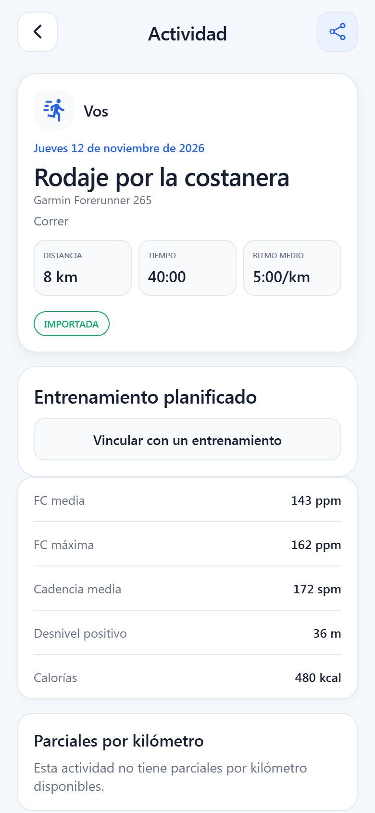
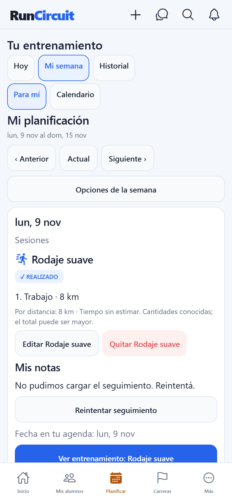
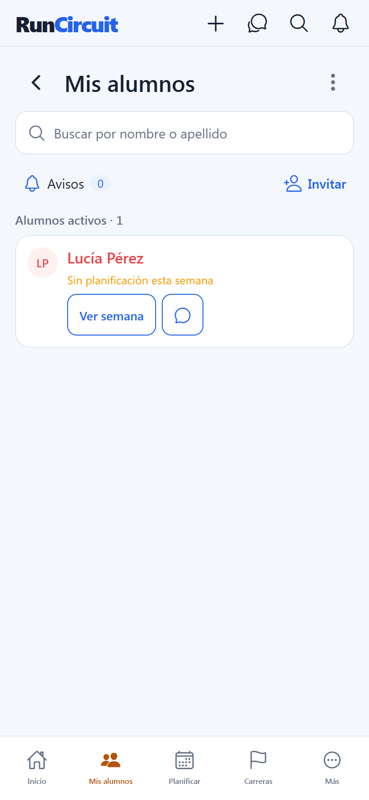
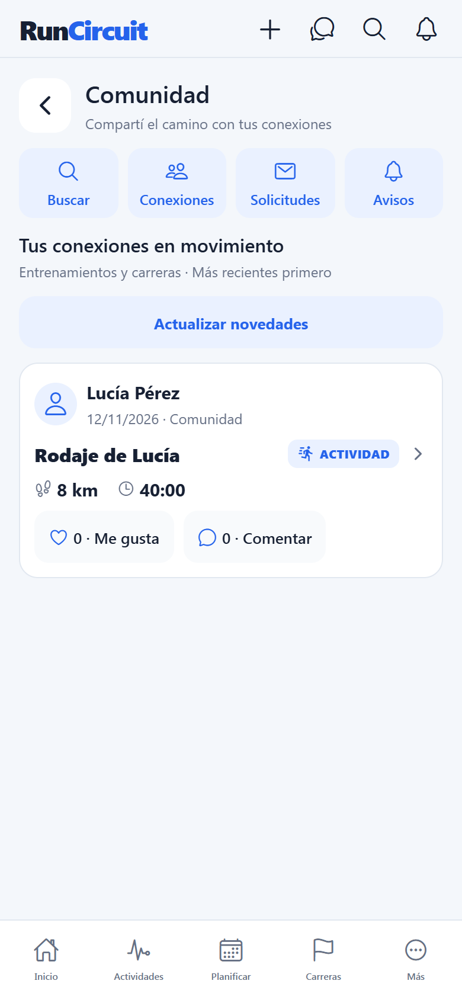

Calendario de carreras
Descubrí próximas competencias, distancias y toda la información en un mismo lugar.
Conectá tu cuenta de Garmin Connect e importá automáticamente tus actividades nuevas. Revisá lo que hiciste junto a tu plan semanal y compartilo con tus conexiones.
Entrá con tu cuenta desde el navegador, sin instalar nada.

Pantalla de la app con datos de ejemploLas actividades nuevas aparecen en tu historial de RunCircuit cuando se sincronizan con Garmin Connect. Podés consultar la distancia, el tiempo, el ritmo o la velocidad y la frecuencia cardíaca cuando Garmin envía esos datos.

Descubrí próximas competencias, distancias y toda la información en un mismo lugar.
Compará tus resultados por distancia, categoría, sexo y ubicación.
Encontrá corredores y conectá. Compartí actividades y carreras, participá con Me gusta, comentarios y respuestas.
Registrá entrenamientos, carreras, récords y seguí tu evolución.
Consultá el resumen semanal, tu próximo entrenamiento, tu carrera y tus objetivos desde el carrusel de Inicio.
Explorá las pantallas →Prepará tu semana, consultá las sesiones de tu entrenador y registrá lo que hiciste.
Abrí la semana de cada alumno desde su ficha y dejale una devolución privada sobre su entrenamiento.
Prepará una imagen con tus resultados y elegí qué métricas querés compartir.
Pantallas de la app en vista móvil, con datos de ejemplo.
Deslizá para explorar o elegí una pantalla para ampliarla.
Consultá tu semana y las novedades de tus conexiones.
Revisá las métricas que llegaron desde Garmin Connect.

Organizá tus sesiones y marcá lo que ya hiciste.

Abrí la semana de cada alumno desde su ficha.

Seguí las actividades y carreras de tus conexiones.
El calendario de la comunidad reúne competencias para que puedas descubrir qué correr y dónde.
Competencias ficticias que ilustran parte del calendario de RunCircuit.
Próximamente este calendario se actualizará automáticamente con las carreras publicadas por la comunidad RunCircuit.
Compará tus resultados con otros corredores por distancia y categoría.
Ejemplo ilustrativo · corredores ficticios
Buscá por nombre, ciudad o club a corredores que forman parte de RunCircuit.
Generá conexiones, conversá por mensajes privados y construí tu comunidad de running.
Explorá perfiles, carreras y la actividad competitiva de otros corredores.
RunCircuit también te ayuda a registrar y organizar tu propia actividad como corredor.
Registrá rodajes, pasadas, bloques, fondos y otras actividades.
Conservá tus resultados y competencias en un único historial.
Seguí tus mejores marcas en las principales distancias.
Visualizá tu evolución y mantené tus objetivos siempre presentes.
RunCircuit nace con una idea simple: reunir en un mismo lugar las carreras, los resultados, los rankings y la comunidad que forma parte del running.
Una plataforma creada en Argentina para corredores, con la mirada puesta en seguir creciendo.
Usá RunCircuit desde el navegador o instalá la versión 0.8.7 para Android. Elegí cómo acompañar tus entrenamientos.